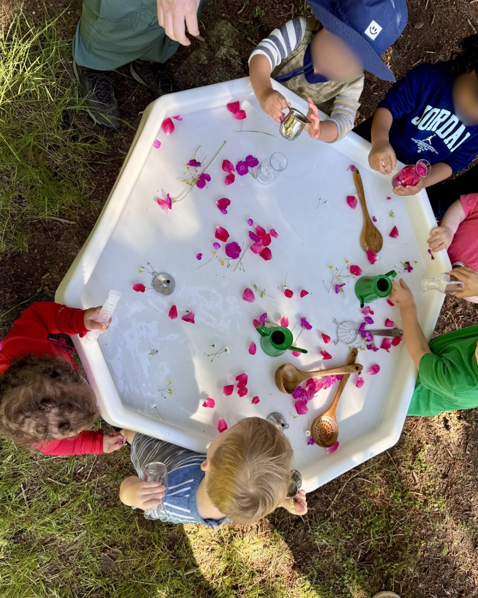
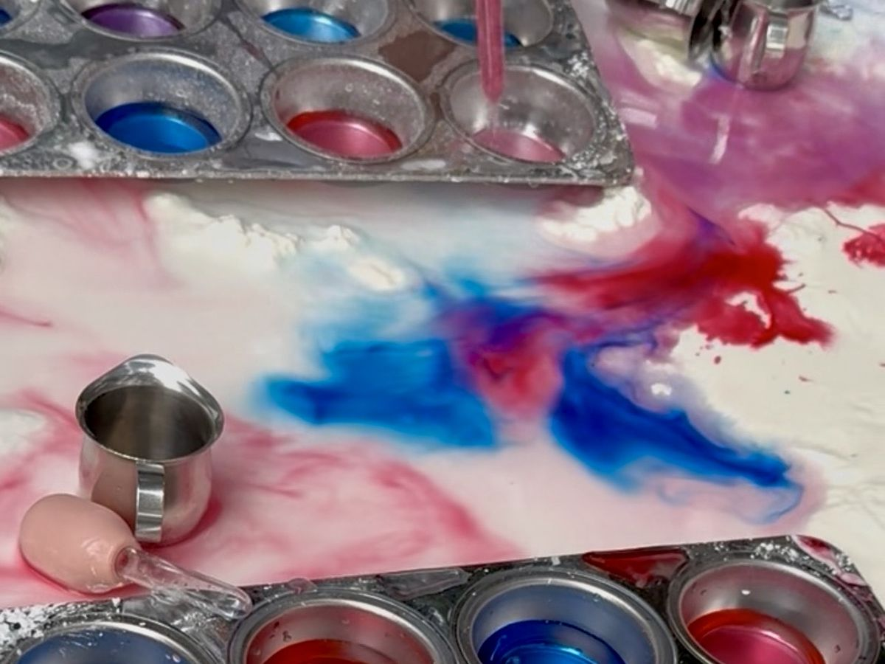
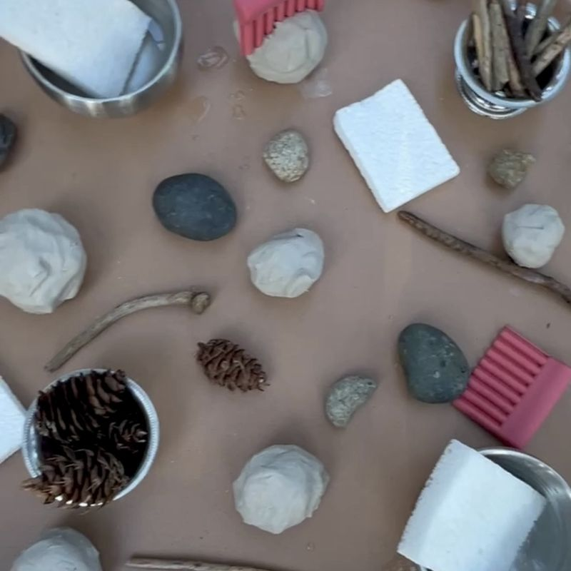

Our Stations
What your child gets to do on a Wednesday morning.
Every Wednesday, we set up six to eight stations before families arrive. Your child can visit them in any order and stay as long as they like. Spending the whole morning at the mud kitchen is completely fine.
Each week has a theme, and it shows up at almost every station. On fish week, kids printed fish with bubble wrap, pressed fish stamps into playdough, went fishing in the rice bin with tongs, and pushed salmon upstream on a stream we built from downspout ramps. Other weeks have been bugs, berries, clouds, apples, and mud.
Some themes come from the calendar, like the fall equinox. Others come from watching the kids and planning around whatever they couldn’t stop doing the week before. (You can read more about that on our Approach page.)
The Stations Change With the Seasons
A lot of what we use comes from outside or from the kitchen, so the stations follow whatever the season is doing.
In June, the mud kitchen smelled like rosemary, mint, and lavender, and petals floated in the water tray. In September, the first week had fresh sunflower heads and armfuls of dahlias. By the equinox, there were dry leaves to crunch.
What Changes Each Week
Collaborative Art
The whole class builds one big canvas together over the season, with a new layer and a new tool each week. Below are the first four layers of the fall canvas. Over the summer we also used sponges, wool, feathers, and toy trucks driven through paint. At the end of the season it gets cut into crowns (more on that below).


What it builds: Working next to other kids on one shared thing. Toddlers mostly play side by side at this age, and the canvas gives them something to add to together.
Individual Art
This is the art your child brings home, and it’s always process art. Besides the ones in the photos, kids have made butterfly prints on folded paper plates, day and night paintings on paper that’s half white and half black, and nature frames they decorate and then carry on the walk. Your child decides what it becomes. We write names on as they finish, and dry art from past weeks hangs on our art line so you can grab it on your way out. (Here’s why we do process art.)


What it builds: Hand strength and control from gripping a brush, squeezing a paint bottle, and pressing a stamp down hard enough to print. Also plenty of cause and effect, like opening a folded plate to see what the paint did inside.
Sensory Play
Water, rice, oats, oobleck, clay, cloud dough, and whatever the forest drops that week. Sensory play is also one of the best ways for a busy toddler to settle their body.
We’ve squeezed cloud sponges into blue water, hidden pom poms in rainbow rice, dripped red and blue into white oobleck to watch it turn purple, and made cloud dough from cornstarch saved from the week before. When a morning is wet and muddy, there’s usually a dry bin too, like rice with scoops and funnels, for kids who want something clean to dig in.




What it builds: Toddlers figure out what things are like by touching them, whether it’s sticky, gritty, heavy, or cold. Pouring and scooping is also early math, even if nobody is counting yet.
Mud Kitchen
The mud kitchen is out almost every week, and the base changes with the theme. We make the mud from coconut coir, a soft potting soil made from coconut husks, and mix a batch before families arrive. Dry coir and a jug of water sit nearby so kids can mix more themselves.
We’ve made fizzing mud that bubbles up when colored water hits it, bubble soup whipped up with whisks, a jelly kitchen made from psyllium husk, and leaf soup with cinnamon sticks and dry leaves to crunch in.


What it builds: Pretend play and conversation. Kids serve soup to their parents and to each other and pick up new words along the way. Pouring from a small pitcher into a jar also takes more arm and hand control than it looks like.
Playdough
Playdough comes out often, made fresh in a color that fits the theme. It was lavender the first week of summer, red and blue berry jam on berry week, and brown with cocoa powder on mud week. Kids poke in twigs and pebbles, walk plastic bugs across it to leave tracks, press it onto bark to see the pattern, and roll it out with stamp rollers. At the summer Crown Celebration it turned into cupcakes with candles and rainbow rice sprinkles.


What it builds: Squishing, rolling, and pinching strengthen the small hand muscles kids will use later to hold a pencil.
Nature Exploration and Small World
Hand lenses, collection cups, and a feather, a slug, or a patch of moss to look at up close. Small world trays are little landscapes built from real moss, bark, and pinecones, with animal figures tucked in. On Who Lives Under Here week, the tray had rocks and sticks the kids could lift to find bugs hiding underneath. Other weeks we’ve set out mirrors that reflect the trees and a balance scale for weighing pinecones and rocks.


What it builds: Looking closely and noticing small differences, like which pinecone is heavier. The small world trays also get kids telling little stories with the animals.
Fine Motor and Real Jobs
Toddlers love a job that’s really theirs, and they light up when they get to show you. They’ve picked pom pom apples off a line and sorted them by color, hammered golf tees into a big zucchini, and counted butterflies into muffin tins with tongs. On mud week we set a car wash right next to the muddy truck tray so kids could see the whole job, dirty to clean, without anyone explaining it.


What it builds: Tongs, clothespins, and little hammers all take real hand control. Finishing a job on their own, like washing every truck, is a big deal at two.
Out Every Week
These three are out every Wednesday in about the same spot, no matter the theme. Kids who need a familiar place to start often head to one of them first.
Pebblestones and Climbing
Pebblestones and milk crates for climbing and balancing, plus logs, roots, and uneven ground on the trail. Some weeks we set the pebblestones close together so they work as stepping stones.


What it builds: Balance and body awareness. Trying a climb that’s a little hard, with you close by, is how toddlers learn to judge risk and gain confidence.
Water Painting
Kids paint with plain water on a magic water canvas laid across a fallen log. Their marks show up dark, then slowly fade as it dries, so they can paint again and again. The tool changes. It might be brushes, sponges, rollers, fly swatters, or pipettes with little dishes of water. Some weeks we skip the canvas and paint the log itself, since wet wood goes dark and dries back too.


What it builds: Arm and wrist control, and the fun of doing something over and over just to watch it happen.
Book and Instrument Blanket
A quiet spot on our red blanket with books and instruments. Some kids come for a story, some come to shake a rattle, and some just need a minute away from the busier stations. There’s often a book out that goes with the week’s theme.

What it builds: Early language and listening, and the idea that taking a break is allowed.
The Crown Celebration
Before the last morning of each season, we cut the class canvas into crowns, one for every child. On that last morning, we go around the circle and each child picks their own crown. Then we head out on the trail together.
We also keep a handprint canvas with the season’s name on it. Every child adds a hand, and it comes back out at every celebration.
Each crown holds a little of every week and every hand that painted it.
Our fall celebration is a week early, on November 18, so families traveling for Thanksgiving don’t miss it. Class still meets as usual on November 25.
Upcoming Crown Celebrations
Wednesday, November 18, 2026
Wednesday, February 24, 2027
Wednesday, May 26, 2027
Wednesday, August 25, 2027